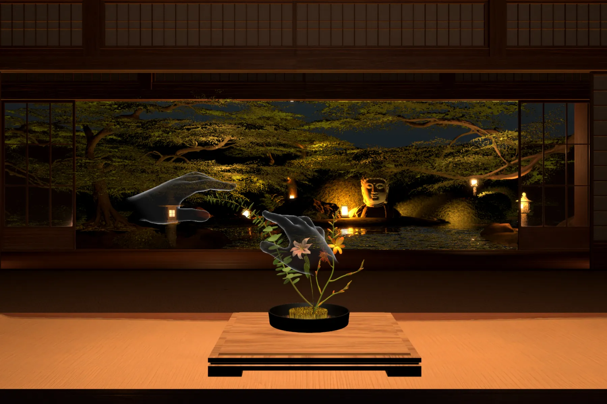
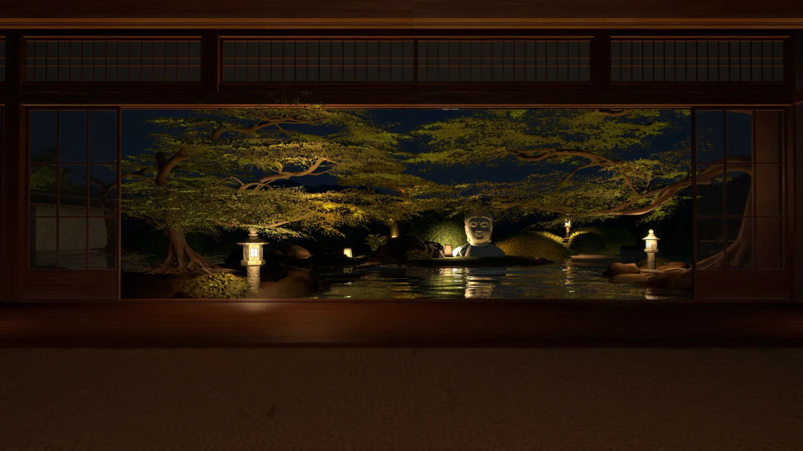

Ikebana translated into VR through gesture, spatial composition and small rituals: tea to learn, the pipa for music, palms together to save. Arranging, bending and drawing made it feel expressive, not just functional.
VR EXPERIENCE · IXDS 712
Ikebana you can practise with your hands.
SCROLL
A VR sanctuary for ikebana. No controllers, no fresh flowers to buy: you pick, bend and arrange stems with your own hands, and can even draw a flower and watch it grow into 3D.
- Course
- IXDS 712 · SCAD · Spring 2026
- Team
- Yiming Han, Liang Zhou, Minwei Wu
- Built with
- Unity · Meta Quest hand tracking · Meshy AI
- Category
- VR · Interaction design


My role
One of three designers taking Zen Bloom from concept to a playable Quest build: the experience flow, the gesture language and the look and feel of the space.
- Experience & interaction design
- Gesture language
- Environment & lighting
- AI flower pipeline
- Vision film
01
Vision film
Slow down, and arrange something beautiful.
02
Why ikebana, why VR
More than decoration: a practice of calm.
In East Asian culture, ikebana is an expression of nature, balance and inner cultivation. It values space, restraint and the season, and sits close to meditation and ritual. We wanted to bring that feeling into VR, as a place to slow down and refocus.
- 01
Practise without the cost
Real arranging means buying fresh flowers, tools and vases, again and again. In VR, beginners can practise as often as they like, with no waste.
- 02
Learn in three dimensions
Ikebana is spatial: height, depth, balance and visual weight. Arranging at 1:1 scale with your hands builds that sense far better than a screen.
- 03
A calm place to create
For flower lovers, curious beginners, and anyone who needs a quiet, creative corner of their day.


03 The experience
Gaze, then pinch.Pluck to listen.Flowers, your choice.Bend, shape, create.Paint, seal, bloom.Palms together, saved.Beyond the bloom.
Step 01 / 07 · EnterStep 02 / 07 · PipaStep 03 / 07 · ChooseStep 04 / 07 · ArrangeStep 05 / 07 · DrawStep 06 / 07 · SaveStep 07 / 07 · Gallery
Face one of three moon windows to choose a studio, then hold a pinch to step through.
Pluck the pipa to fill the room with music. Pluck it again to return to silence.
Unroll the scroll and explore the flowers. Pick the ones that inspire you.
Place stems in the kenzan and bend them freely, until the shape feels like yours.
Paint a flower with ink, press the seal, and AI grows your sketch into a 3D bloom.
Bring your palms together to save the arrangement. It joins your gallery.
The moment passes. Your creation remains, displayed in a quiet alcove.
04
Gesture language
Your hands are the controller.
We replaced controllers with a hybrid gesture framework, so every action feels closer to the real ritual. A few consistent rules keep it learnable.
- Gaze + long pinch
Look at a target, then hold a pinch to confirm. Used for key choices and teleporting, so nothing fires by accident.
- Tea as a tutorial
The lobby teaches gestures through a cup of tea, so onboarding feels like part of the ritual, not a manual.
- Pluck the pipa
Music on or off is an instrument in the room, not a menu.
- Grab, place, bend
Pick stems from the scroll, set them in the vase and bend branches to shape the composition.
- Draw to bloom
Sketch a flower with ink and stamp the seal to turn 2D into 3D.
- Palms together
A quiet, familiar gesture to save your work to the gallery.

05
Drawing to bloom
From a reference to a flower you can hold.
To fill the studio with flowers, and to power the draw-to-bloom moment, we built an AI-assisted modelling pipeline. It became the foundation for turning a user’s sketch into a 3D flower inside the scene.
 01
01Inspiration
Mood boards and references set the aesthetic direction.
 02
02AI concept
Clean, white-background flower concepts as precise modelling references.
 03
03Rapid prototype
Meshy AI turns the 2D concept into a 3D base mesh in minutes.
 04
04Refine for Unity
Geometry and textures tuned to run smoothly in VR.
06
Flower library
Seventeen flowers and branches, ready to arrange.
From bird of paradise to curly willow, each stem is painted on the scroll in ink and marked with a red seal, so choosing a flower feels like browsing an album.

07
Reflection
What worked, and what’s next.
Generated flowers could match the drawing more closely. Next, we’d let people cut branches more freely, offer more flowers, and bring finished arrangements into mixed reality to place in their own rooms.

Next project
Fitfido
View case study